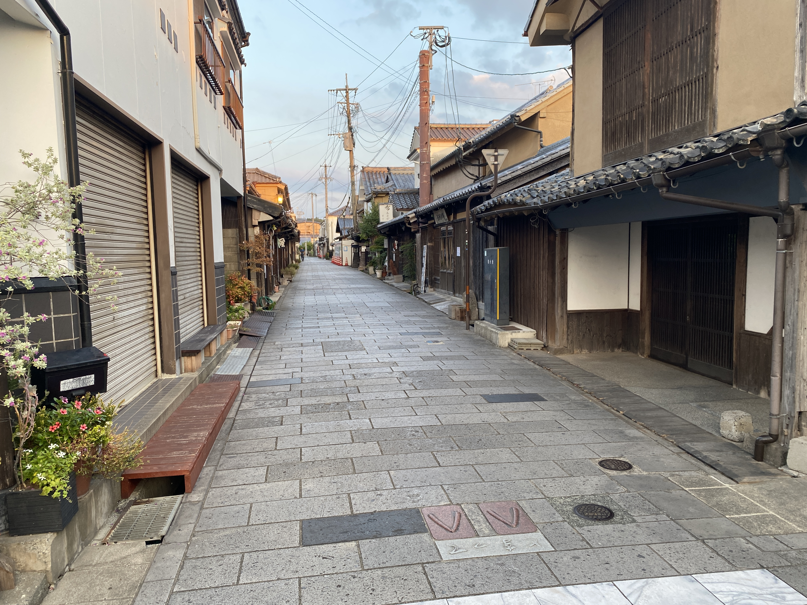

豆田町について
豆田町とは？
豆田町は、大分県日田市にある歴史ある町並みが残る地域です。 江戸時代には幕府の直轄地として発展し、商人の町として栄えました。 現在も、昔ながらの建物や町割りが残り、 歴史や文化を感じながら散策を楽しむことができます。


豆田町の歴史
豆田町は、江戸時代初期に城下町として整備され、 1639年に日田が幕府の直轄地となった後、 商人の町として発展しました。
商人たちは各地との取引で財を築き、 日田の経済や文化の発展を支えました。 その歴史は、現在の町並みや建物にも受け継がれています。
町並みの特徴
豆田町には、江戸時代から続く町割りや 伝統的な建物が残っています。 歴史を感じられる町並みが大きな魅力です。

伝統的な町家
白壁や瓦屋根など、 昔ながらの建物が並びます。

歴史ある町並み
江戸時代から続く町割りが 現在も残されています。

歴史と文化
商家や資料館などから、 豆田町の歴史を学べます。
現在の豆田町
現在の豆田町は、歴史的な町並みを残しながら、 観光や買い物、食事を楽しめる場所として 多くの人に親しまれています。
お店や資料館を巡りながら、 豆田町ならではの魅力を見つけてみましょう。
観光スポットを見る